Introduction
Polly Notebook is a scalable analytics platform which allows you to perform data analysis remotely in a Jupyter-like notebook. It provides the flexibility to select the compute capacity, the environment according to your need along with the ability to share the analyses with your peers for seamless team collaboration.
Polly Notebook provides a Jupyter-like interface on the cloud. Some of the features of Polly Notebooks over other local hosting options are:
-
Ready-to-code platform: Installing and maintaining environments for every notebook can be a frustrating overhead. We provide custom docker environments that come pre-installed with modules commonly used in bioinformatics. You can also add your own custom docker environments.
-
Cloud storage: With Polly Notebooks, you can store your data files and notebooks in a single place that will be ready to run in less than 5 minutes from anywhere in the world. No need to fetch your code from Bitbucket anymore!
-
Share and collaborate on your Workspaces: Polly allows sharing of workspaces so you can review and refer notebooks within your team.
-
Resource management: Most biological analyses (like RNAseq) are commonly resource-intensive, whether in terms of RAM or processing power. In such cases, you either have to scramble for bigger resources or compromise on the speed by using less processing power. Polly makes it possible to scale up your resources at any time.
Accessing Polly Notebooks
Navigate to the Polly Workspaces in which the analysis needs to be performed. The notebooks of this workspace can accessed from the middle panel.
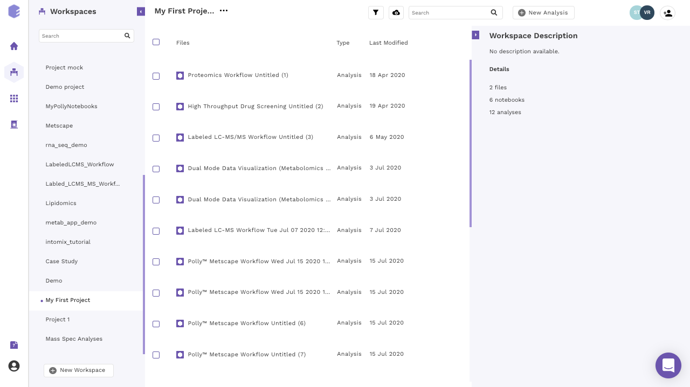
You can access Polly Notebooks in three ways:
- Create a new notebook: Go to the Applications interface and click on the Polly Notebooks button located on the bottom left side of the navigation bar to create a new notebook. You are required to provide a name to the Notebook and select the workspace along with an environment and a machine to run the given notebook.
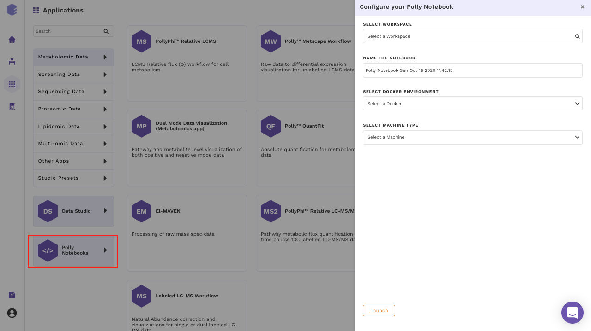
- Upload a notebook: Click on the Cloud Upload icon prsent at the top of the middle panel and select the Upload a Notebook option.
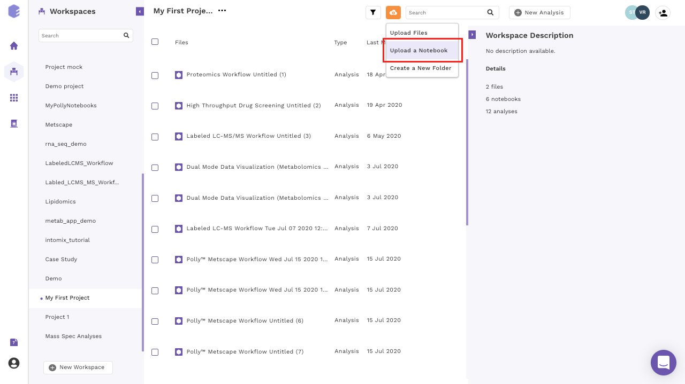
The notebook can be uploaded from the local system as well as from the various cloud storage services (Dropbox, Google Drive and Box). To upload from local system, files can be dragged and dropped. To upload from various cloud storage services, select the relevant option, login to the service and select the files to be uploaded.
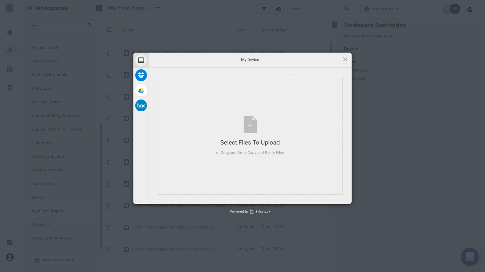
- Open an existing notebook: Click on the name of any existing notebook to Edit and Launch it. If you are running the notebook for the first time, the option Edit and Launch would appear as a default selection to launch the selected notebook. You are required to select an environment and a machine to run the given notebook, oly after these selections are done you can launch the notebook.
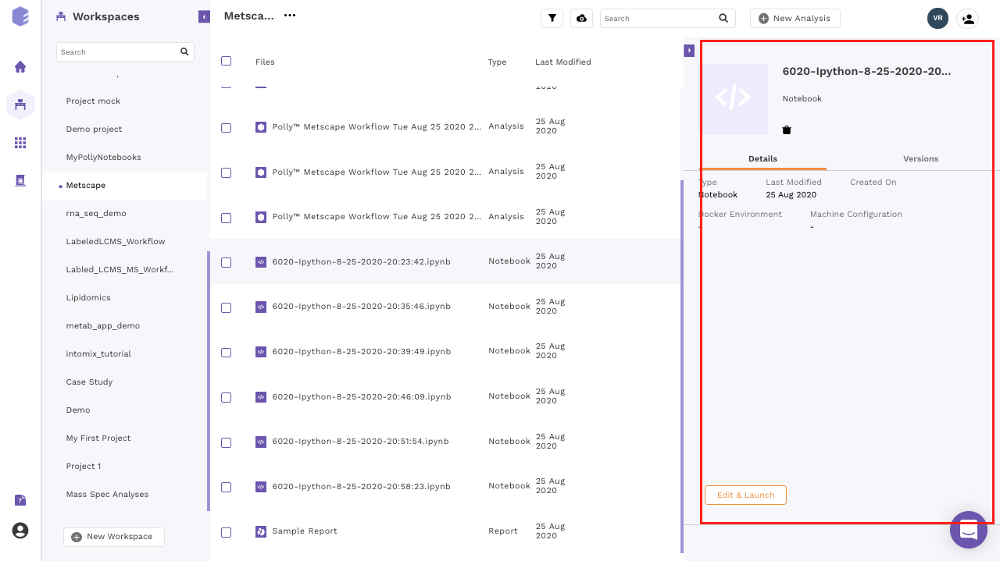
- For an older notebook: You have two options, you can either launch the notebook directly by the Launch button or you can choose to edit it first before launching through the Edit and Launch button.
Note:
- Under the edit option, you can only change the machine type. The docker environment would remain the same as the one selected when you run the notebook for the first time.
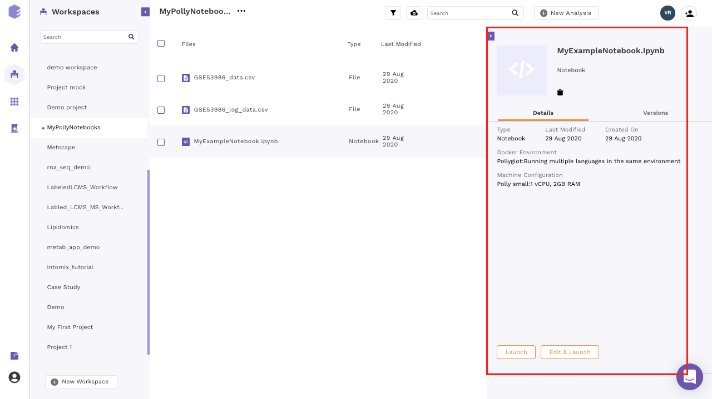
Pre-Configured Environments
Polly supports various notebook environments in the form of dockers to cater to the needs of different users. Each of the dockers is built according to various data analytic needs ranging from basic scripting, processing large data or training and testing of ML models. The menu to select the notebook environments will pop-up whenever you create or upload the notebook and opens it for the first time.
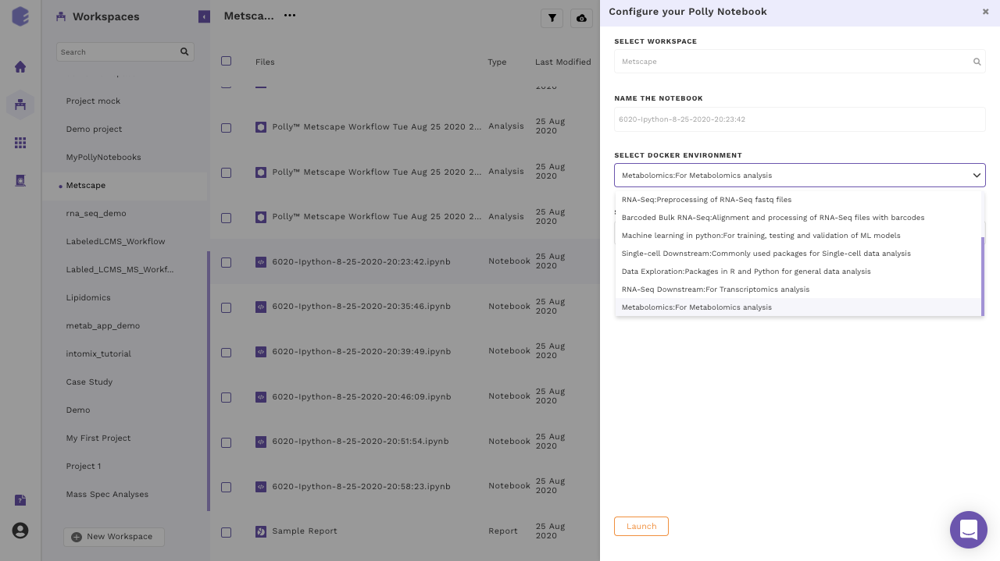
The various notebook environments supported are as follows:
| Environment | Usage | R libraries | Python Modules | System |
|---|---|---|---|---|
| R | General R scripting |
|
None | |
| Python 2 | General Python 2 scripting | None |
|
|
| Python 3 | General Python 3 scripting | None |
|
|
| Pollyglot | Multiple kernels (R, python and bash) in same notebook/environment |
|
|
|
| Barcoded Bulk RNA-seq | Alignment and processing of RNA-seq fastq files with barcodes |
|
|
|
| Machine Learning in python | Training, testing and validation of ML models | None |
|
|
| Single Cell Downstream | Single Cell Analysis |
|
|
|
| Data Exploration | R and python for general data analysis | All libraries from base R docker | All libraries from base python docker | |
| RNA-seq Downstream | Transcriptomics Analysis |
|
All libraries from base python docker | |
| Metabolomics | Metabolomics Analysis |
|
All libraries from base python docker |
Computational Machines Available
The size of the data varies from few MBs to hundreds of GBs, and in order to process and analyze this huge data, one would need the computation power from a small machine to a large workstation. Polly Notebook supports configurations having 2 to 72 GB Ram and 1 to 36 CPU cores. The menu to select a machine configuration will pop-up when you creates a new notebook or uploads a notebook and tries to open it for the first time.
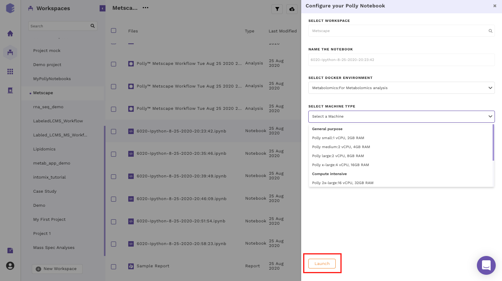
Most of the machine configuration are already specified to cover the wide variety of use cases. More machine configuration can also be made available on request (contact us at polly@elucidata.io). The general machine configurations are divided into three broad categories:
- General purpose: Configurations from 1 to 4 CPU cores and 2 to 16 GB RAM fall under this category. The various configurations are:
| Name | CPU/Cores | RAM |
|---|---|---|
| Polly small | 1 | 2 GB |
| Polly medium | 2 | 4 GB |
| Polly large | 2 | 8 GB |
| Polly x-large | 4 | 16 GB |
- Compute Intensive: Configurations from 16 to 36 CPU cores and 32 to 72 GB RAM fall under this category. The various configurations are:
| Name | CPU/Cores | RAM |
|---|---|---|
| Polly 2x-large | 16 | 32 GB |
| Polly 3x-large | 36 | 72 GB |
- Memory-Optimized: Configurations from 4 to 8 CPU cores and 32 to 64 GB RAM fall under this category. The various configurations are:
| Name | CPU/Cores | RAM |
|---|---|---|
| Polly 2x-large | 4 | 32 GB |
| Polly 3x-large | 8 | 64 GB |
| Polly 4x-large | 16 | 120GB |
Other Useful Features
There are few other useful features as well that might come handy when using a Polly Notebook.
-
Click on the kebab menu at the end of the selected notebook. A menu with various options will open.
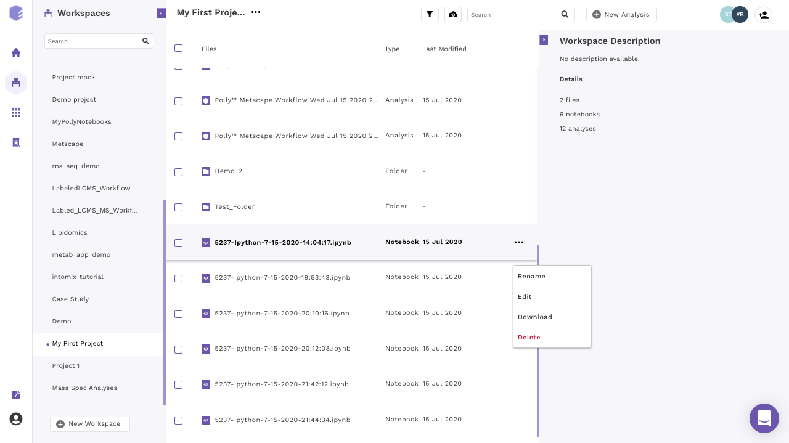
Figure 9. Edit button to change machine configuration -
Scroll down in the menu and navigate to the desired option.
-
Rename: You can rename the file using this option. Provide the new name to the file and click on Rename to confirm your changes.
-
Edit: Polly gives the flexibility to change the machine configuration to allow the usage of the notebook according to the computing power required at each step. You can change the configuration according to the need at each step. A menu with the different machine configuration will open, with the various options available will be displayed under the Select Machine Type segment. Select the appropriate option to change the configuration.
-
Download: You can select this option to download the selected notebook on your system.
-
Delete: You can use this option to delete the selected notebook.
-
Getting started with Polly Notebook
Upon selecting a pre-configured docker environment and a computational machine, a Polly Notebook starts launching on a new tab of the browser. Based upon the type of computational machine chosen while launching a Polly Notebook you will see a progress bar which will tell you that your new notebook is opening.
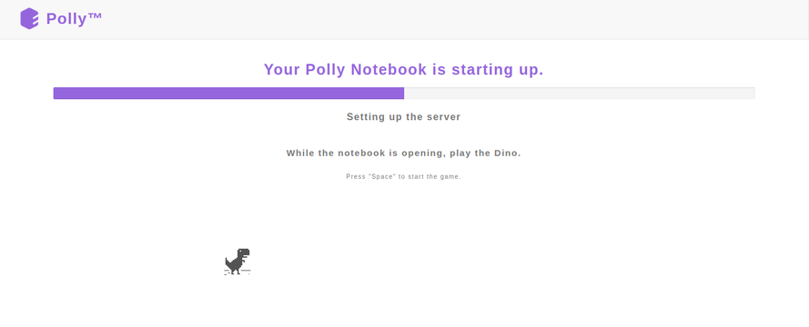
Once the server is ready, you will see the new notebook gets opened on the browser. The interface is very similar to that of a Jupyter notebook.
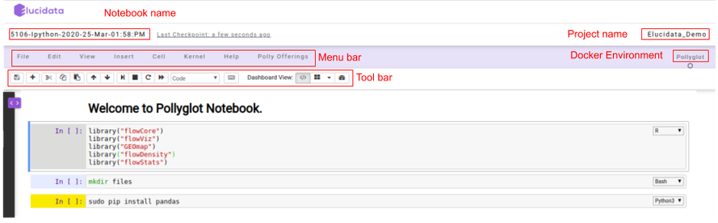
On the top left, you can see a pre-defined name given to the notebook if in case a new notebook was created. Towards the top right, you can see the Polly Workspace name and below it, you can see the kernel/docker environment selected for opening the notebook.
-
Menu bar: There are multiple tabs present in the menu bar section which can be used to operate various functions in the notebook. For example, under the File tab, you can select the Rename option to change the name of the current active notebook.
-
Toolbar: It contains multiple icons that allow you to perform various operations that are frequently used.
Structure of Polly Notebook
The Polly notebook comprises of a sequence of cells. There are three types of cells: markdown cells, raw cells, and code cells. In each of these types, you can input multi-line content and each cell can be executed by pressing Shift+Enter, or by clicking either the Run cells option on Cell tab in the menu bar or the “Play” button in the toolbar.

Markdown cells
You can record the computational process in a proficient manner using rich text. The Markdown language allows you to define a structure to the notebook by using markdown headings. It gives a basic method to play out text markup, that is, to determine which parts of the text should be stressed (italics), bold, form lists, etc.
Raw cells
You can write output directly in the raw cells. A raw cell is not evaluated by a notebook meaning anything written in the raw cell goes to the output when that cell is executed.
Code cells
A code cell allows you to edit and write a new code. The code cell executes the code written by you based on the kernel selected while launching the notebook. The code cell can include multiple programming languages as well as seen on the bottom right side of the image above. The above example is of a Pollyglot Docker environment which allows you to select multiple programming languages in the same notebook thus, you can select the type of kernel you prefer to code on.
Once the code cell is executed, the results which are computed by sending the code to the kernel are displayed as an output below the cell. Again to execute a code cell, you can click on the “Run” button and if you want to stop the computation process of a particular code cell, then the “Interrupt” button needs to be selected in the toolbar.
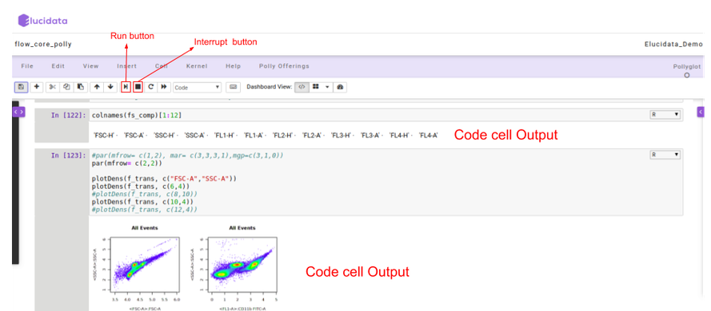
Polly Offerings
Polly Offerings tab in the Menu bar contains the following two options, namely Terminal and File Explorer which are described below.

Terminal
Once the Terminal option is selected, it launches a new tab on the browser and provides access to the command-line interface to execute any sets of commands. You have access to all the file types which are available in the docker environment and those can be managed through the terminal as well. The terminal option also allows you to install Python or R packages (as described later), managing system binaries and system configurations, and helps you working with code repositories hosted on GitHub, Bitbucket, etc.

File Explorer
Similar to the above option, if you select the File Explorer option, a new tab opens up in the browser and you can view different file types and directories present in the docker environment. Under the Files tab, the list of all the files and directories is available to you and any modification such as delete, upload or modifying by opening a file type can be done.
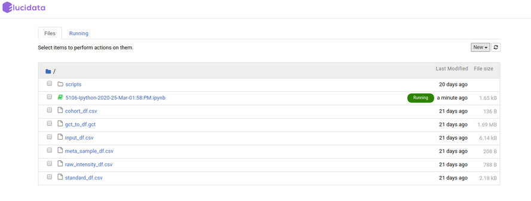
Additionally, you can also launch a new notebook by selecting the New button present on the top right corner of the page in File Explorer. The new notebook will open in a new tab and would automatically be made available in the Notebook section of the same Polly Workspace of the original notebook.

File Explorer window also allows you to view, edit or create various file types in an interactive manner. The Text File option in the New button can be used to create a new text file. For viewing or editing a file, you can click on the file and a text editor will open in a new tab of the browser. You can view or edit the file and save the changes made in the file. The text editor also allows you to select a programming language from the Language tab to edit and convert the file format.

Accessing Workspace files in Notebook
Accessing individual files using Python and R functions
For carrying on analysis, if you require any input files which are available in Polly Workspaces, those files can be fetched using a set of commands. You can list all the files present in the Workspace and then select the individual file by the following command:
## Lists all the files present in the project
list_project_file()
## The file will be downloaded in the current working directory
download_project_file('sample_file.csv')
After finishing the analysis, you can push back the newly generated output files again to the Workspace using the following command
## Save the file to the project
save_file_to_project('sample_file.csv')
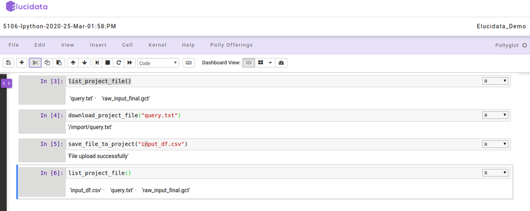
Note:
- These functions cannot access files within folders in workspace. To access those files, use CLI commands.
Accessing files and directories using CLI commands
The contents of any directory within a Workspace can be listed using the following command on a notebook terminal or a bash cell.
polly files list --workspace-path "" -y
Here, the path of the directory has to start with “polly://”. To view the contents within a folder called “Data” in the workspace, the following command will have to be executed on the notebook terminal.
polly files list --workspace-path "polly://Data" -y
To access the directory in the notebook, the following command will have to be executed on the notebook terminal or a bash cell.
polly files sync -s "" -d "" -y
Here, -s refers to source and -d refers to destination. If the folder called “Data” is to be accessed from Workspace in the notebook folder called “Input”, execute the following command.
polly files sync -s "polly://Data" -d "Input" -y
To save notebook directories back to the Workspace, keep the source as notebook directory and destination as Polly Workspace in the same command as mentioned above.
polly files sync -s "" -d "" -y
To save the folder called “Output” back to Polly Workspace, use the following command.
polly files sync -s "Output" -d "polly://" -ySimilarly, if an individual file needs to be accessed in a notebook, use the following command
polly files copy -s "" -d "" -y
Here, -s refers to source and -d refers to destination. If the file called “Input1.csv” is to be accessed from Workspace folder “Data” in the notebook folder called “Input”, execute the following command.
polly files copy -s "polly://Data/Input1" -d "Input/Input1.csv" -yAn individual file can be saved back to workspace by interchanging source and destination in the mentioned command.
polly files copy -s "Input/Input1.csv" -d "polly://Data/Input1" -yInstalling Packages
Although most of the required packages and tools can be made available to you via the customized docker environment, sometimes you might require to install new packages to carry on the analysis. For installing the packages, you can choose two options based on their convenience, you can do it on the Notebook itself or via the terminal.
Installing packages and system binaries using the Notebook cell
You can install the required packages and system binaries by running the usual installation codes on the code cell of a notebook.
- For Python packages: You can run the following command in the code cell with Python kernel selected to install the required packages.
# for installing packages DON'T forget to use sudo. It will not ask for password.
!sudo pip install
- For R packages: You can run the following command in the code cell with R kernel selected to install the required packages.
# for installing packages DON'T forget to use sudo. It will not ask for password.
## Installing CRAN packages
!sudo R -e 'install.packages(c("package-name"), repos="https://cloud.r-project.org/")'
## Installing Bioconductor packages
!sudo R -e 'BiocManager::install(c("package-name"), update = TRUE, ask = FALSE)'
# If error finding BiocManager then install it first using the following command and re-run the above command.
!sudo R -e 'install.packages(c("BiocManager"), repos="https://cloud.r-project.org/")'
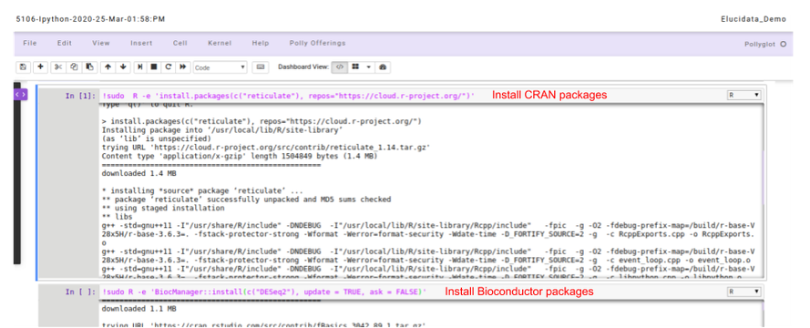
- For System binaries: You can also install the system binaries by running the following command in the code cell selecting the bash kernel.
# System binaries
sudo apt install
# If the above command outputs package not found, You can run this command to update the system package indices
sudo apt-get update
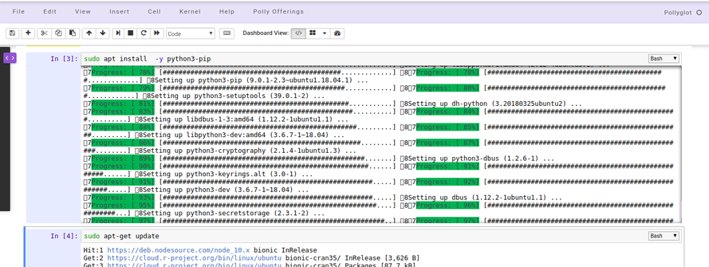
Installing packages and system binaries via Terminal
Another option is also available to install various packages and system binaries using the terminal. You can access the terminal as described in the document above. The commands for installation are almost similar to commands used while installing using a notebook code cell.
- For Python packages: You can run the following command directly on the terminal to install the required packages. Once the package installation is successful, you can import the package in your notebook.
# for installing packages DON'T forget to use sudo. It will not ask for password.
> sudo pip install
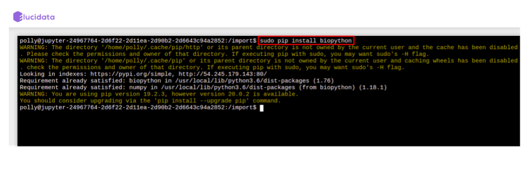
- For R packages: You are required to go to the terminal and open the R Kernel using “sudo R” and then install the required R packages. Once the package installation is successful, you can import the library in your notebook R kernel as usual.
## You can install R package by opening R terminal
> sudo R
## Install CRAN packages using the following command
> install.packages(c('pkg-name'), dependencies=TRUE, repos=)
# For cran mirror link: You can use either of your choice or this one : "https://cran.cnr.berkeley.edu/"
## Install Bioconductor packages using the following command
> BiocManager::install(c("pkg-name"), update = TRUE, ask = FALSE)
# If error finding BiocManager then install it first using the following command and re-run the above command.
> install.packages("BiocManager")

- For System binaries: You can also install the system binaries by running the following command directly on the terminal itself.
# System binaries
> sudo apt install
# If the above command outputs package not found, You can run this command to update the system package indices
> sudo apt-get update
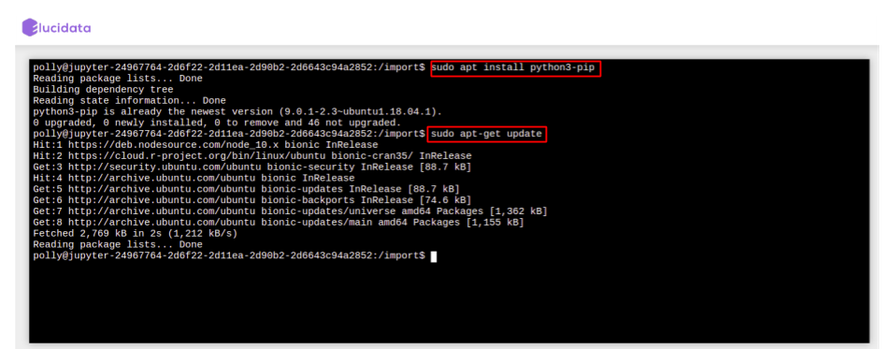
Reusable Scripts
Polly Notebook also allows you to make use of the reusable scripts which are already made available to you in every notebook. The reusable scripts consist of the snippet codes which are required frequently to perform any analysis. The scripts can include data reading, normalization, visualization generic functions/codes and can be added to the notebook code cell with just a single click and executed as usual. The reusable scripts can be found on the left side as a collapsible dialogue box and you can choose the scripts at any time while performing the analysis.
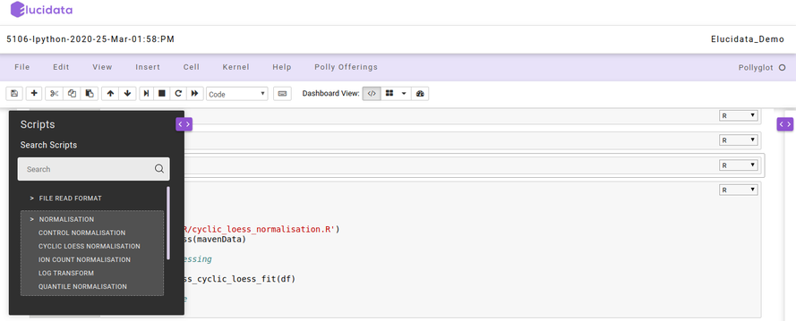
On the right side, another collapsible dialogue box gets opened when you select any reusable script which provides information about the options and usage of that particular reusable script. You can also add your own reusable scripts on the Polly Notebook so as to make use of them in your repeated analysis and save time.